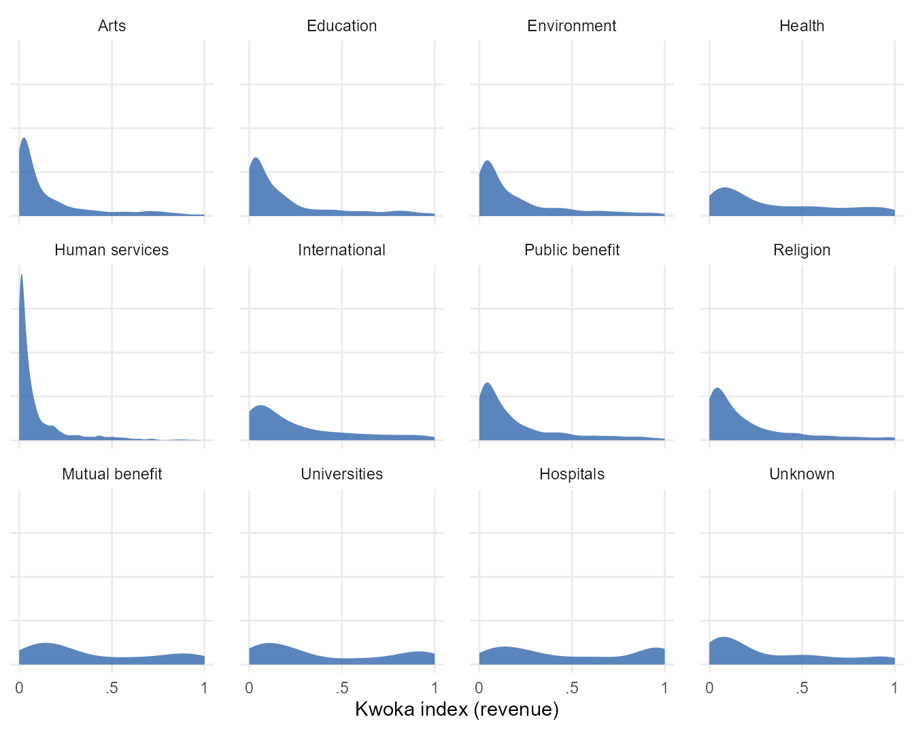
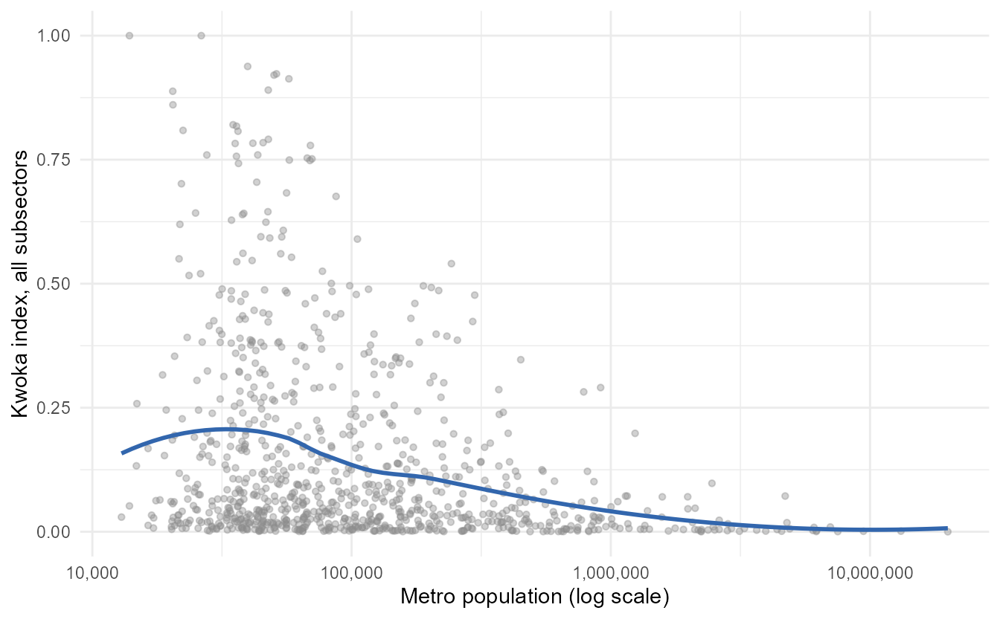
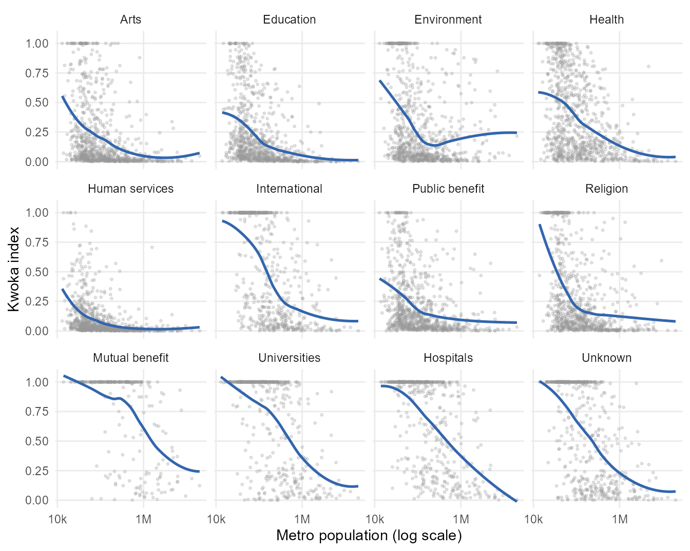
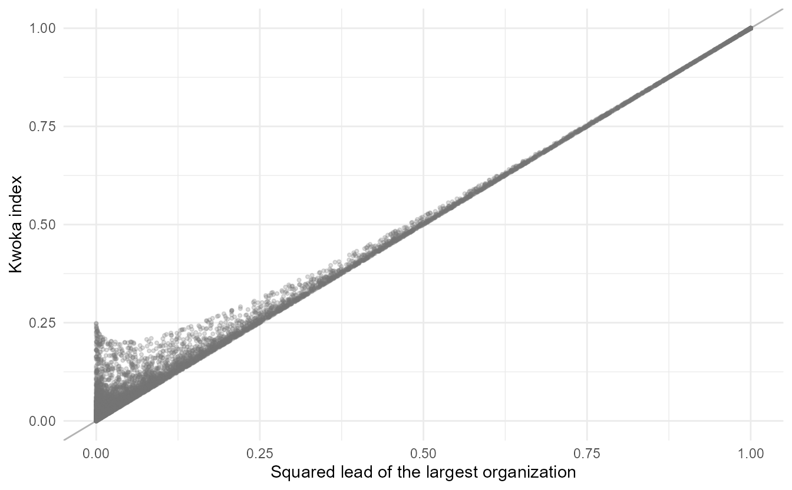
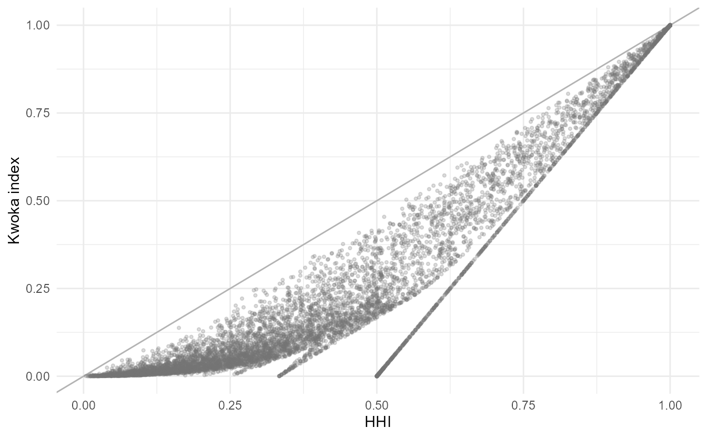

Kwoka’s (1977) dominance index asks a different question from HHI: not how concentrated a market is, but whether its leaders stand apart from the organizations just behind them. With shares sorted from largest to smallest,
It is the sum of squared gaps between successive shares. The index is 0 when every organization has the same share, however few there are, and approaches 1 when one organization holds nearly everything. A single-organization market gets 1.
get_kwoka() returns the index along with the shares of
the three largest organizations (top1 to
top3).
library( npcompete )
library( ggplot2 )
# NTMAJ12 labels for the NTEEV2 major groups
ntmaj12 <- c( ART = "Arts", EDU = "Education",
ENV = "Environment", HEL = "Health",
HMS = "Human services", IFA = "International",
PSB = "Public benefit", REL = "Religion",
MMB = "Mutual benefit", UNI = "Universities",
HOS = "Hospitals", UNU = "Unknown" )A toy market
Two markets with nearly the same HHI: a duopoly of equals, and one leader with three small followers.
GEO <- rep( c( "duopoly", "leader" ), c( 2, 4 ) )
TOTREV <- c( 50, 50, 70, 10, 10, 10 )
toy <- data.frame( GEO, SUB = "ART", YEAR = 2020, TOTREV )
k <- get_kwoka( toy, geography = "GEO", subsector = "SUB", year = "YEAR" )
h <- get_hhi( toy, geography = "GEO", subsector = "SUB", year = "YEAR" )
kh <- merge( k, h[ c( "GEO", "SUB", "HHI" ) ], by = c( "GEO", "SUB" ) )
subset( kh, GEO != "ALL" & SUB != "ALL" ) |> knitr::kable( digits = 2 )| GEO | SUB | YEAR | N | top1 | top2 | top3 | KWOKA | HHI | |
|---|---|---|---|---|---|---|---|---|---|
| 4 | duopoly | ART | 2020 | 2 | 0.5 | 0.5 | NA | 0.00 | 0.50 |
| 6 | leader | ART | 2020 | 4 | 0.7 | 0.1 | 0.1 | 0.36 | 0.52 |
HHI rates the two markets about the same. The Kwoka index separates them: there is no gap at all between the duopolists, and a large gap between the leader and everyone else.
Computing the Kwoka index from org-level data
npo_panel_sample holds every 501(c)(3) filer in Vermont
from 2015 to 2019, one row per organization-year. Here the market is the
county.
vt <- get_kwoka( npo_panel_sample, geography = "COUNTY_FIPS" )
# all subsectors combined, one row per county
vt19 <- subset( vt, YEAR == 2019 & SUB == "ALL" & GEO != "ALL" )
vt19[ order( vt19$KWOKA ), ] |> knitr::kable( digits = 3, row.names = FALSE )| GEO | SUB | YEAR | N | top1 | top2 | top3 | KWOKA |
|---|---|---|---|---|---|---|---|
| 50027 | ALL | 2019 | 209 | 0.191 | 0.108 | 0.091 | 0.009 |
| 50013 | ALL | 2019 | 15 | 0.222 | 0.180 | 0.152 | 0.009 |
| 50025 | ALL | 2019 | 181 | 0.217 | 0.203 | 0.149 | 0.010 |
| 50023 | ALL | 2019 | 251 | 0.266 | 0.199 | 0.090 | 0.018 |
| 50009 | ALL | 2019 | 7 | 0.357 | 0.204 | 0.198 | 0.040 |
| 50003 | ALL | 2019 | 124 | 0.428 | 0.181 | 0.051 | 0.079 |
| 50005 | ALL | 2019 | 82 | 0.437 | 0.157 | 0.132 | 0.085 |
| 50017 | ALL | 2019 | 73 | 0.437 | 0.104 | 0.099 | 0.113 |
| 50019 | ALL | 2019 | 54 | 0.518 | 0.216 | 0.052 | 0.119 |
| 50015 | ALL | 2019 | 83 | 0.453 | 0.111 | 0.097 | 0.119 |
| 50011 | ALL | 2019 | 53 | 0.547 | 0.223 | 0.077 | 0.129 |
| 50007 | ALL | 2019 | 414 | 0.503 | 0.091 | 0.040 | 0.173 |
| 50001 | ALL | 2019 | 123 | 0.611 | 0.139 | 0.048 | 0.231 |
| 50021 | ALL | 2019 | 117 | 0.638 | 0.089 | 0.068 | 0.303 |
The Kwoka index across US metro areas
cbsa_metrics holds every metric for every US metro and
micro area (CBSA) in 2019, by NTEE major group, measured on total
revenue.
metros <- cbsa_metrics
metros$NTMAJ12 <- factor( ntmaj12[ metros$SUB ], levels = ntmaj12 )
# subsector markets with at least one organization and some revenue
markets <- subset( metros, SUB != "ALL" & N > 0 & !is.na( KWOKA ) )Descriptive statistics by subsector
markets |>
dplyr::group_by( NTMAJ12 ) |>
dplyr::summarize(
metros = dplyr::n(),
median_N = median( N ),
KWOKA_p25 = quantile( KWOKA, 0.25 ),
KWOKA_median = median( KWOKA ),
KWOKA_p75 = quantile( KWOKA, 0.75 ),
above_0.5 = mean( KWOKA > 0.5 )
) |>
knitr::kable( digits = 2 )| NTMAJ12 | metros | median_N | KWOKA_p25 | KWOKA_median | KWOKA_p75 | above_0.5 |
|---|---|---|---|---|---|---|
| Arts | 894 | 9 | 0.02 | 0.07 | 0.29 | 0.17 |
| Education | 916 | 12 | 0.03 | 0.10 | 0.31 | 0.17 |
| Environment | 872 | 6 | 0.04 | 0.15 | 0.50 | 0.25 |
| Health | 912 | 9 | 0.09 | 0.28 | 0.68 | 0.36 |
| Human services | 936 | 36 | 0.01 | 0.04 | 0.10 | 0.05 |
| International | 567 | 3 | 0.09 | 0.42 | 1.00 | 0.47 |
| Public benefit | 919 | 11 | 0.04 | 0.11 | 0.30 | 0.15 |
| Religion | 865 | 6 | 0.04 | 0.14 | 0.48 | 0.24 |
| Mutual benefit | 259 | 1 | 0.42 | 1.00 | 1.00 | 0.74 |
| Universities | 489 | 2 | 0.23 | 0.98 | 1.00 | 0.67 |
| Hospitals | 538 | 2 | 0.27 | 0.93 | 1.00 | 0.67 |
| Unknown | 555 | 2 | 0.13 | 0.61 | 1.00 | 0.56 |
above_0.5 is the share of metros where the index exceeds
0.5, which roughly means the leader holds more than 70% of the
market.
Distribution by subsector
The Kwoka index is strongly right-skewed: most markets have small gaps between successive organizations. Single-organization markets (a spike at 1) are left out.
ggplot( subset( markets, N > 1 ), aes( KWOKA ) ) +
geom_density( fill = "#3266ad", colour = NA, alpha = 0.8 ) +
facet_wrap( ~ NTMAJ12, ncol = 4 ) +
scale_x_continuous( breaks = c( 0, 0.5, 1 ), labels = c( "0", ".5", "1" ) ) +
labs( x = "Kwoka index (revenue)", y = NULL ) +
theme_minimal() +
theme( axis.text.y = element_blank(),
panel.grid.minor = element_blank(),
panel.spacing.x = unit( 1, "lines" ) )
The Kwoka index and metro size
All subsectors combined, one point per metro, with a loess smooth:
all_subs <- subset( metros, SUB == "ALL" & !is.na( POP ) )
ggplot( all_subs, aes( POP, KWOKA ) ) +
geom_point( colour = "grey55", alpha = 0.4, size = 1.2 ) +
geom_smooth( method = "loess", formula = y ~ x, se = FALSE,
colour = "#3266ad", linewidth = 1 ) +
scale_x_log10( labels = scales::label_comma() ) +
labs( x = "Metro population (log scale)", y = "Kwoka index, all subsectors" ) +
theme_minimal()
By subsector:
ggplot( subset( markets, !is.na( POP ) ), aes( POP, KWOKA ) ) +
geom_point( colour = "grey60", alpha = 0.25, size = 0.6 ) +
geom_smooth( method = "loess", formula = y ~ x, se = FALSE,
colour = "#3266ad", linewidth = 0.9 ) +
facet_wrap( ~ NTMAJ12, ncol = 4 ) +
scale_x_log10( breaks = c( 1e4, 1e6 ), labels = c( "10k", "1M" ) ) +
labs( x = "Metro population (log scale)", y = "Kwoka index" ) +
theme_minimal() +
theme( panel.grid.minor = element_blank() )
What drives the index
In most markets the first gap, between the largest and second-largest organization, dominates the sum. The leader’s lead can be read off the concentration ratios: .
markets$LEAD <- 2 * markets$CR1 - markets$CR2
ggplot( subset( markets, N > 1 ), aes( LEAD^2, KWOKA ) ) +
geom_abline( colour = "grey70" ) +
geom_point( colour = "grey45", alpha = 0.25, size = 0.8 ) +
labs( x = "Squared lead of the largest organization",
y = "Kwoka index" ) +
theme_minimal()
Points on the diagonal are markets where the leader’s gap is the whole index; points above it have further large gaps lower down.
Against HHI, the Kwoka index sits below it and fans out: markets with the same HHI can have very different dominance.
ggplot( subset( markets, N > 1 ), aes( HHI, KWOKA ) ) +
geom_abline( colour = "grey70" ) +
geom_point( colour = "grey45", alpha = 0.25, size = 0.8 ) +
labs( x = "HHI", y = "Kwoka index" ) +
theme_minimal()
Notes
- The index ignores the level of concentration. Two equal organizations (HHI = 0.5) and 100 equal organizations (HHI = 0.01) both score 0. Read it next to HHI or a concentration ratio.
- Kwoka, J. E. (1977). Large firm dominance and price-cost margins in manufacturing industries. Southern Economic Journal, 44(1), 183-189.